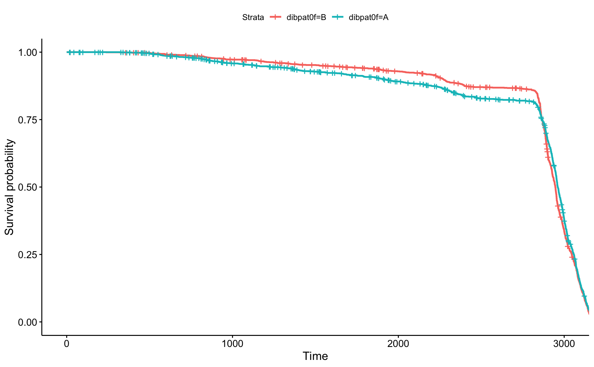

Chapter 1 Introduction to Survival Analysis
# Gögnin fylgja með epitools pakkanum. Þá er nóg að virkja gögnin með data() skipun.
data(wcgs)
wcgs$behpat0f <- factor(wcgs$behpat0,levels=1:4,label=c("A1","A2","B1","B2"))
wcgs$dibpat0f <- factor(wcgs$dibpat0,levels=0:1,label=c("B","A"))
wcgs$smoker <- ifelse(wcgs$ncigs0>0,1,0)
wcgs$smokerf <- factor(wcgs$smoker,levels=c(0,1),labels=c("No","Yes"))
wcgs$heightcm <- wcgs$height0*2.54
wcgs$weightkg <- wcgs$weight0*0.45359237
wcgs$bmi <- wcgs$weightkg / (wcgs$heightcm/100)^2
wcgs$cholmmol = wcgs$chol/39
wcgs$time169y <- wcgs$time169/365.24
# restricted followup to 5 years
wcgs$time169y5 <- pmin(wcgs$time169y,5)
wcgs$chd695 <- (wcgs$chd69==1 & wcgs$time169y <=5)1.1 Inngangur
Efni dagsins í dag er myndræn framsetning i lifunargreiningu. Við munum skipta umfjölluninni í þrennt. Fyrst fjöllum við um skerðingu (e. censoring) af hverju hún stafar og hvernig við vinnum með hana. Því næst fjöllum við um Kaplan Meier metlinn, teiknum Kaplan Meier ferla og lærum að túlka þá og meta. Að lokum skoðum við hvernig meta má miðgildi lifunar (e. median survival) og skoðum tölfræðipróf til að kanna mun á lifunarferlum.
Við notum gagnasafnið wcgs sem fylgir t.d. með epitools pakkanum. WCGS stendur fyrir Western Collaborative Group Study. Nánari umfjöllun má sjá á ClincialTrials.gov.
Í stuttu máli var 3154 karlmönnum á aldrinum 39 til 59 fylgt eftir í allt að 10 ár þangað til þeir fengu hjartasjúkdóm, eða létust, eða þeir urðu 70 ára eða eftirfylgni lauk af öðrum ástæðum.
1.2 Skerðing (censoring)
Meginmarkmið WCGS rannsóknarinnar var að skoða áhættuþætti fyrir hjartasjúkdómum og því eru hjartasjúkdómar aðalútkomubreytan okkar. Breytan chd69 segir til um hvort karlmennirnir fengu hjartasjúkdóm eða ekki.
##
## 0 1
## 2897 257Við sjáum að alls fengu 257 karlmenn fengu hjartasjúkdóm á meðan rannsókninni stóð. Í lógistískri aðhvarfsgreiningu hefði okkur nægt að líta á þessa breytu sem útkomubreytuna okkar og látið þar við sitja. En fleiri upplýsingar er að finna i gögnunum okkar og því getum við gert betur.
Í fyrsta lagi höfum við upplýsingar um nákvæman dagafjölda frá því að eftirfylgdin hófst og þangað til maðurinn fékk hjartasjúkdóm og við getum tekið tillit til þess tíma í líkönunum okkar. Þannig getum við til dæmis skoðað þá sem fengu hjartasjúkdóm innan mjög skamms tíma.
Í öðru lagi er meginþorri gagnanna okkar skertur (e. censored), þ.e.a.s. eftirfylgdin stóð einungis yfir í takmarkaðan tíma og því höfum við ekki upplýsingar um hvort sumir mannanna hefðu mögulega þróað með sér hjartasjúkdóm eftir að eftirfylgdinni lauk. Skerðing getur verið af ýmsum ástæðum, maðurinn neitaði áframhaldandi þátttöku, rannsókninni lauk eða þá að hann dó af öðrum orsökum og hafði því ekki möguleika á að þróa með sér hjartasjúkdóm í framhaldinu. Til eru aðferðir til að skoða margs konar útkomur samtímis (t.d. bæði hjartaáföll og dauða) og er þá talað um samkeppni áhættu (e. competing risk). Þær aðferðir eru utan efni þessa námskeiðs.
Skerðing getur verið frá vinstri (þ.e.a.s. eftirfylgni hófst ekki fyrr en á ákveðnum tímapunkti) eða frá hægri (eftirfylgni lauk á ákveðnum tímapunkti) eða á bili (eftirfylgni var eingöngu á ákveðnu tímabili). Í langflestum tilvikum er unnið með skerðingu frá hægri og því munum við bara fjalla um hana hér.
Á sama hátt og viðbótarupplýsingar eru fólgnar í því hversu fljótt einstaklingur fékk hjartasjúkdóm eru einnig heilmiklar upplýsingar fólgnar i því hversu lengi honum var fylgt eftir án þess að hann fengi hjartasjúkdóm. Því skiptir tími fram að skerðingu jafn miklu máli og tími fram að hjartasjúkdómi.
Í R tvinnum við saman þessar upplýsingar með því að búa til breytu af gerðinni lifunarhlutur (e. survival object). Við búum hann til með skipuninni Surv sem er í pakkanum survival og mötum á tveimur breytum:
- Hve langur tími leið fram að atburði/þangað til eftirfylgd lauk
- Hvort atburður eða skerðing átti sér stað á þeim tímapunkti.
Skoðum nánar fyrstu sex mælingarnar í lifunarhlutnum:
## [1] 1664+ 3071+ 3071+ 3064+ 1885 3102+Fyrsta mælingin er 1664, 0. Plúsinn gefur til kynna að honum var fylgt eftir í 1664 daga án þess að til atburðar kæmi og því er mælingin skert. Fimmta mælinginin, 1885, 1 hefur hins vegar engan plús sem gefur til kynna að maðurinn fékk hjartasjúkdóm eftir 1885, 1 daga.
1.3 Kaplan Meier metillinn
Kaplan Meier metilinn er ein langmest notaða tölfræðiaðferðin þegar framkvæmd er lifunargreining, meðal annars vegna þess að á honum byggja svo kölluð Kaplan-Meier gröf sem eru ein algengasta leiðin til að lýsa lifunargögnum. Okkur þykir því ástæða til að skoða hann í kjölinn.
Fyrst skulum við kynna til sögunnar svokallað lifunarfall (e. survival curve). Lifunarfallið er yfirleitt táknað með \(S(t)\) og túlkun fallsins er svohljóðandi
\[ S(t) = \text{Líkur þess að einstaklingur fá ekki atburð fram að tíma $t$.} \]
Lifunarfallið miðar alltaf við einhvern tiltekinn atburð. Oft er sá atburður dauði, en hann er einnig mjög oft eitthvað annað eins og til dæmis greining á sjúkdómi. Í því tilviki er stundum talað um “sjúkdómslausa lifun” eða “atburðarlausa lifun” til að skerpa á að lifunin eigi ekki við um líf og dauða, heldur lifun án þess að hafa fengið tiltekinn atburð, sem í þessu tilviki er greining á sjúkdóm. Lifunarfallið gefur okkur þá líkurnar á því að hafa ekki fengið sjúkdóm innan tiltekins tíma.
Í okkar tilfelli væri \(S(365)\) líkur þess að einstaklingur fái ekki hjartasjúkdóm innan 365 daga. Ef ekki væri fyrir skerðingu væri lítill vandi að meta hvert það gildi væri, sem við samkvæmt venju köllum \(\hat S(365)\). Besta matið á \(\hat S(365)\) væri einfaldlega fjöldi þeirra sem fengu hjartasjúkdóm innan 365 daga af allri heildinni. En skerðingarinnar vegna vandast málin.
Kaplan Meier metilinn er stærðfræðileg regla til að meta \(\hat S(t)\). Hann er metinn á sérhverjum tímapunkti þegar atburður á sér stað (en ekki skerðing). Í gögnunum okkar fengu 257 karlmenn hjartasjúkdóm svo þessir tímapunktar eru að hámarki 257. Við nánari athugun reynast stundum fleiri en einn karlmaður fá hjartasjúkdóm eftir jafnlangan tíma svo tímapunktarnir eru alls 248. Ef við gefum þeim heiti eftir stærðarröð þeirra, \(t_1, \ldots , t_{248}\), þá væri:
- \(t_1 =\) 18, sem er sá tímapunktur þegar fyrsti maðurinn fékk hjartasjúkdóm,
- \(t_2 =\) 21 væri sá tímapunktur þegar næsti maður fékk hjartasjúkdóm
- \(t_{248} =\) 3229, væri að lokum sá tímapunktur þegar síðasti maðurinn fékk hjartasjúkdóm.
Kaplan Meier metilinn er metinn á sérhverjum þessara 248 tímapunkta. Formúla metilsins er
\[ \hat S(t) = \Pi_{i=1}^k \left( 1- \frac{d_i}{n_i} \right)\]
þar sem \(d_i\) táknar fjölda þeirra sem fengu atburðinn á tímapunkti \(i\) en \(n_i\) er fjöldi þeirra sem er enn í áhættu að fá atburðinn á tímapunkti \(i\), þ.e.a.s. hafa hvorki fengið atburðinn, né verið skertir.
Í fyrsta tímapunktinum er Kaplan Meier metillinn hreinlega hlutfall þeirra sem ekki var kominn með hjartasjúkdóm af þeim sem ekki voru orðnir skertir á þeim tímapunkti (þ.e.a.s. af þeim sem voru enn í eftirfylgd). Fyrir næsta tímapunkt þarf að reikna einn mínus hlutfall fjölda þeirra sem fékk hjartasjúkdóm á þeim tímapunkti af þeim sem enn voru í eftirfylgd á þeim tímapunkti og margfalda það gildi við síðasta reiknaða Kaplan-Meier gildið. Þannig er haldið áfram koll af kolli fyrir alla tímapunktana.
Skoðum nú fyrstu gildin handvirkt. Fyrir fyrsta tímapunktinn, \(t_1\), sem var \(t=18\), skoðum við hversu margir eru enn í eftirfylgd á þeim tímapunkti:
## [1] 3154og hversu margir þeirra höfðu ekki fengið hjartasjúkdóm á þeim tímapunkti
## [1] 3153Kaplan-Meier matið á tímapunkti \(t=18\), er því hlutfall þessara tveggja talna, eða \(3153/3154\) sem er 99.97 prósent.
Fyrir næsta tímapunktinn, \(t_2\), sem var \(t=21\), skoðum við hversu margir eru enn í eftirfylgd á þeim tímapunkti
## [1] 3153og hversu margir þeirra fengu hjartasjúkdóm á þeim tímapunkti
## [1] 1Hlutfallið á tímapunkti \(t_2\) er því
\(1 - d_2/n_2 = 1 - 1/3153 = 3152/3153\)
Kaplan Meier gildið á tímapunkti \(t_2\) er þá það gildi, margfaldað með síðasta reiknaða gildi eða \(3152/3153 \cdot 3153/3154 = 3152/3154\) sem er 99.94 prósent.
Svona er haldið áfram koll af kolli fyrir alla 248 tímapunktana.
Kaplan Meier matið er eingöngu metið á þeim tímapunktum þegar atburður á sér stað. Ef við viljum meta lifunarfallið á tímapunktum sem lenda á milli þessara gilda notum við Kaplan-Meier matið fyrir næsta tímapunkt á undan.
1.3.1 Kaplan Meier gröf
Kaplan Meier gröf eru langalgengasta myndræna framsetningin á lifunargögnum. Þau eru leið til að lýsa lifunarfallinu myndrænt, þ.e.a.s. hversu hátt hlutfall þátttakanda hefur ekki fengið atburð eftir því sem tíminn líður. Gröfin teikna Kaplan Meier matið í sérhverjum tímapunkti og flatar línur milli punktanna. Gröfin eru látin “falla” á þeim tímapunktum sem atburðir eiga sér stað í samræmi við það hvernig matið er reiknað.
Fyrst um sinn skulum við skoða Kaplan-Meier graf fyrir fyrstu 100 dagana. Það má sjá hér fyrir neðan. Notum tímann í árum time169y:
kmfit <- survfit(Surv(time169,chd69)~1,data=wcgs)
km.plot <- ggsurvplot(kmfit,risk.table = T,break.time.by=10,xlim=c(0,110),
ylim=c(0.99,1))
km.plot 
Grafið byrjar í \(y=1.00\), þegar \(t=0\), enda hefur enginn fengið hjartasjúkdóm við byrjun rannsóknarinnar. Inn á grafið er ég búin að teikna punktalínur þar sem fyrsta “fallið” verður. En það er einmitt við \(t=18\) þegar fyrsti maðurinn fékk hjartasjúkdóm. Þar dettur línan úr 1.00 í 0.9997 eins og við vorum búin að reikna. Næsta “fall” verður við \(t=21\) þegar næsti maður fékk hjartaáfall og svo koll af kolli.
Stækkum nú tímarammann okkar og skoðum Kaplan-Meier graf fyrir fyrstu 365 dagana:
kmfit <- survfit(Surv(time169,chd69)~1,data=wcgs)
km.plot <- ggsurvplot(kmfit,risk.table = T,break.time.by=30,xlim=c(0,365),
ylim=c(0.99,1))
km.plot Núna hafa nokkur lóðrétt strik bæst við (sem eru í raun plúsar ef nána er að gáð). Þær merkingar eru þar sem skerðingar eiga sér stað, á þeim tímapunktum hefur einhver þátttakandi hætt í eftirfylgd af einhverjum ástæðum. Munið að Kaplan-Meier metilinn er bara metinn á þeim tímapunktum sem atburðir eiga sér stað, sem í þessu tilfelli eru hjartasjúkdómar, svo grafið breytist ekki á þeim tímapunkti, plúsarnir bætast bara við. Sum tímarit kjósa að fá Kaplan-Meier gröf með slíkum merkingum þegar skerðingar eru en önnur ekki. Það er ætíð hægt að stilla til í R.
Skipunin survfit metur Kaplan Meier metilinn fyrir okkur. Við mötum hana með lifunarhlut til vinstri en hægra megin koma flokkarnir sem við skiptum gögnunum eftir. Til að byrja með höfum við enga skiptingu á gögnunum og setjum þess vegna bara 1 hægra megin i skipunina.
1.3.2 Kaplan Meier gröf eftir hópum
Kaplan Meier gröf eru kjörin til að sýna mun á lifunarfallinu eftir hópum. Hér liggur beint við að skoða mun á lifun án hjartasjúkdóms eftir persónuleikagerð. Þá setjum við nafnið á þeirri breytu hægra megin í survfit skipunina þar sem 1 var áður fyrr.
Hér breytum við skalanum í ár og skoðum tíma að hjartasjúkdómi eftir persónuleika A og B.
km.plot.2 <- ggsurvplot(kmfit.2,risk.table = T,xscale=365.35,
break.time.by=365.25,ylim=c(0.8,1),tables.height=0.3)
km.plot.2 Á þessari mynd virðist vera mikill munur á tíðni hjartasjúkdóma eftir persónuleikagerð. Blái ferillinn, sem táknar persónuleikagerð A, er allur fyrir neðan rauða ferilinn sem táknar persónuleikagerð B. Þar af leiðandi metum við að lifunarfallið sé lægra, þ.e. að líkur þess að vera án hjartasjúkdóms eru minni, sem þýðir að líkurnar á því að fá hjartasjúkdóm eru hærri. Næst munum við sjá leið til að prófa hvort sá munur sé tölfræðilega marktækur.
1.4 Miðgildi lifunar og logrank próf
Algeng leið til að lýsa lifun er svokallað miðgildi lifunar (median survival). Það er sú tímalengd \(T\) þar sem \(S(T)\) verður minna en 50%. Með orðum er það sá tímapunktur þegar helmingur þátttakandanna ættu að hafa fengið atburðinn. Með því að skrifa út nafnið á lifunarhlutnum okkar fæst mat á miðgildi lifunar ásamt 95% öryggisbili.
## Call: survfit(formula = Surv(time169, chd69) ~ dibpat0f, data = wcgs)
##
## n events median 0.95LCL 0.95UCL
## dibpat0f=B 1565 79 NA NA NA
## dibpat0f=A 1589 178 NA NA NAHér vandast málið! Við sjáum bara NA. Ástæða þess er sú að karlmönnunum i WCGS rannsókninni var ekki fylgt eftir svo lengi að helmingur þeirra hefði þróað með sér hjartasjúkdóm. Í slíkum tilvikum er ekki við hæfi að lýsa lifunarfallinu með miðgildi lifunar, heldur er oft miðað við eins árs, eða fimm ára lifun, svo dæmi séu tekin. Með eins árs lifun er átt við matinu á lifunarfallinu þegar ár er liðið. Þegar lifun er mæld í dögum eins og hjá okkur er það þá \(\hat S(365.25)\). Að sama skapi væri matið á fimm ára lifun \(\hat S(1826.25)\). (Ath 5*365.25=18625.)
Það er auðvelt að biðja R um mat á lifunarfallinu fyrir hvaða tímapunkt sem er. Það er gert með skipuninni summary() sem er mötuð með times() þar sem tímapunktarnir eru skilgreindir.
## Call: survfit(formula = Surv(time169, chd69) ~ dibpat0f, data = wcgs)
##
## dibpat0f=B
## time n.risk n.event survival std.err lower 95% CI upper 95% CI
## 365 1561 2 0.999 0.000904 0.997 1.000
## 1826 1433 36 0.975 0.004026 0.967 0.983
##
## dibpat0f=A
## time n.risk n.event survival std.err lower 95% CI upper 95% CI
## 365 1574 13 0.992 0.00226 0.987 0.996
## 1826 1348 88 0.934 0.00635 0.922 0.947Við sjáum að matið á 365 daga (1 árs) lifun fyrir persónuleikagerð B er 0.99 með 95% ÖB (0.997-1.00) en matið á 365 daga lifun fyrir persónuleikagerð A er 0.992 með 95% ÖB (0.987-0.996). Í neðri línunum sjáum við matið á 1825 (5 ára) lifun. Það er 0.975 (0.967-0.983) fyrir persónuleikagerð B en 0.934 (0.922-0.947) fyrir persónuleikagerð A.
Allt að ofan bendir til þess að það sé munur í tíðni hjartasjúkdóma eftir persónuleikagerðum. Ein leið til að prófa þann mun er með logrank prófi en það prófar hvort munur sé á tveimur lifunarföllum. Skipunin er einfaldlega survdiff og rithátturinn er nákvæmlega sá sami og fyrir surffit
## Call:
## survdiff(formula = Surv(time169, chd69) ~ dibpat0f, data = wcgs)
##
## N Observed Expected (O-E)^2/E (O-E)^2/V
## dibpat0f=B 1565 79 131 20.5 41.8
## dibpat0f=A 1589 178 126 21.3 41.8
##
## Chisq= 41.8 on 1 degrees of freedom, p= 1e-10Og mikið rétt! Munurinn reyndist marktækur, p-gildið er \(1 \cdot 10^{-10}\). Logrank prófið er líka hægt að nota þegar hóparnir eru fleiri en tveir og prófa það þá núlltilgátuna hvort allir ferlarnir séu eins.
Núlltilgátan er að atburðir séu jafn tíðir milli hópanna. Taflan sýnir Expected eða væntanlegan fjölda miðað við þá tilgátu. En gögnin sýna (Observed) að atburðir eru færri í B hóp og fleiri í A hóp en búast mætti við ef tilgátan væri sönn. Við höfnum þeirri tilgátu og drögum þá ályktun að tíðni atburða sé meiri í A hóp.
1.5 Víti að varast og breyting á tímaskala
Algeng en alvarleg mistök sem geta gerst er að ruglast á því hvort atburður eða skerðing eigi að vera táknuð með 0 eða 1. Það er þó auðvelt að bera kennsl á þvi mistök því þá stefna ferlarnir í Kaplan Meier gröfunum beinustu leið niður undir restina og enda alltaf í núlli. Hér er dæmi um slíkt.
Hvað gerist ef ruglast er á atburði og skerðingu!

Að lokum langar okkur að sýna ykkur einfalda leið til að breyta tímaskalanum svo hann sé í árum en ekki dögum. Það er einfaldlega með því að deila í dagafjöldann með 365 þegar lifun skilgreindur. Annað hvort með því að búa til nýja breytu eins og time169y fyrir ofan eða inní survfit.
km.fit.4 <- survfit(Surv(time169/365.25,chd69) ~ dibpat0f,data=wcgs)
ggsurvplot(km.fit.4,ylim=c(0.8,1))